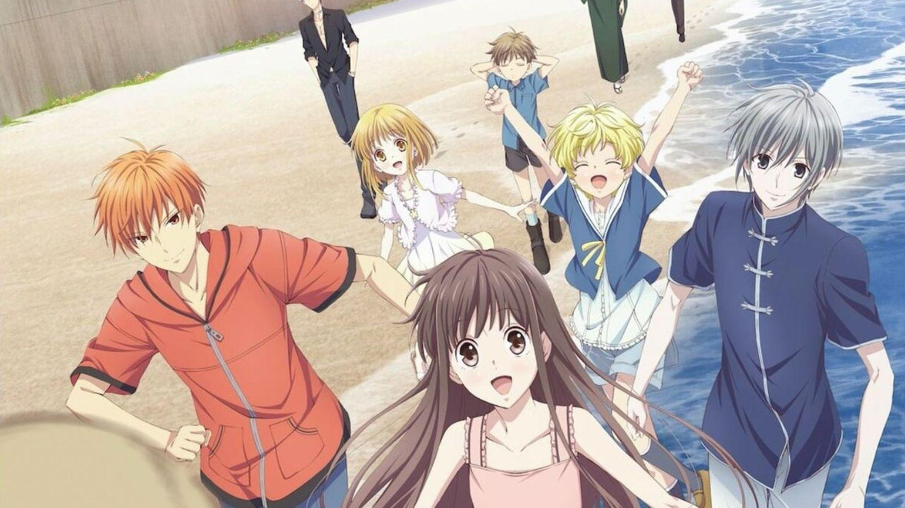
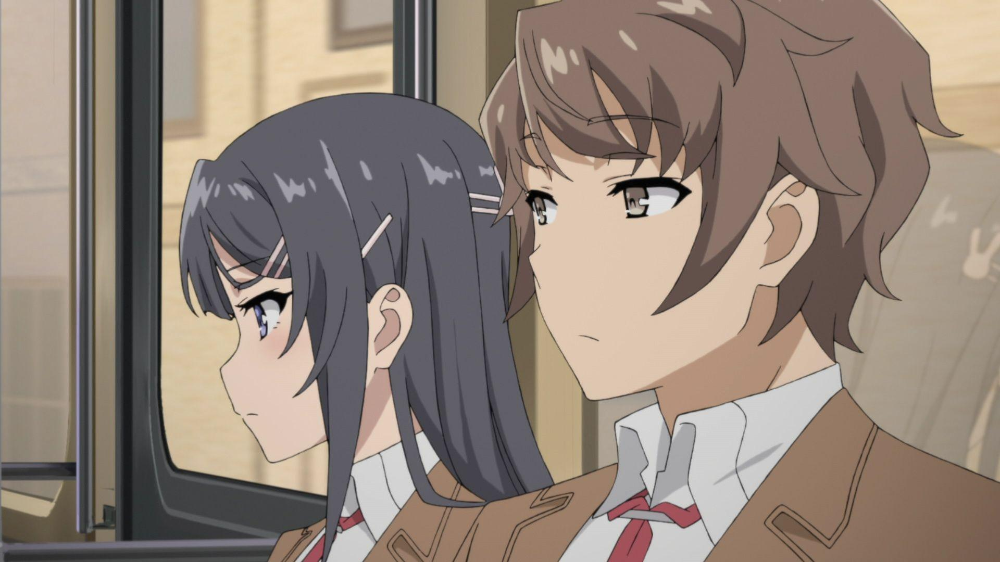
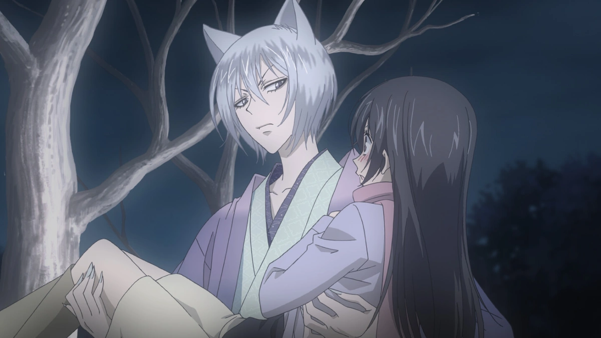
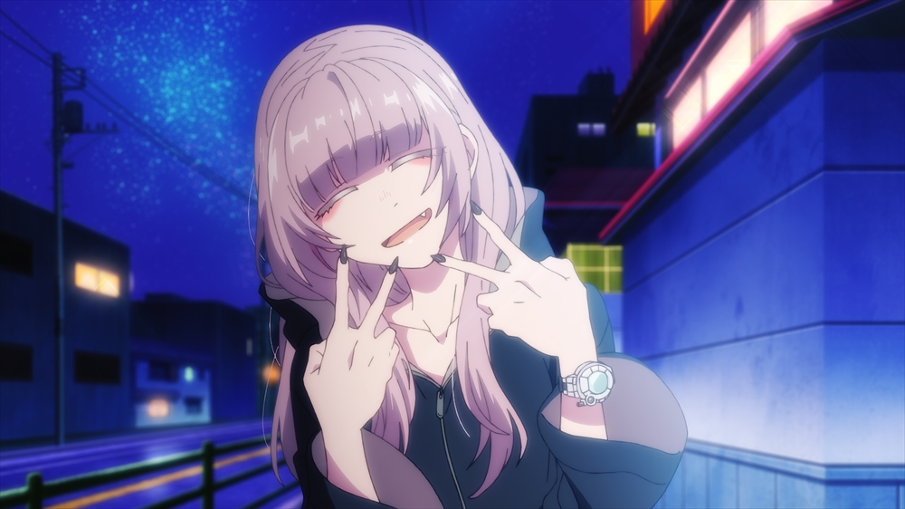
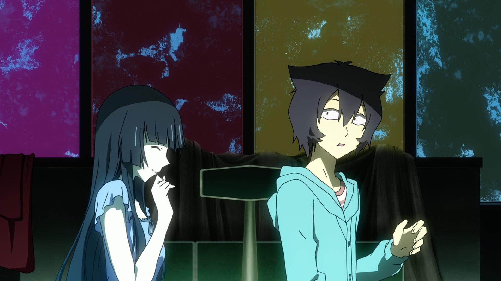
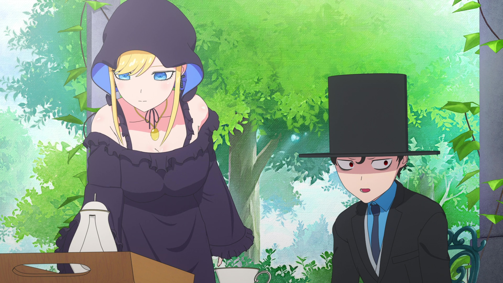
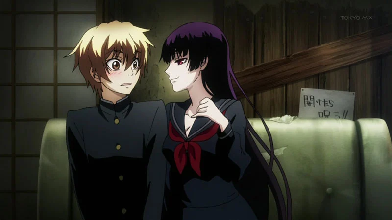
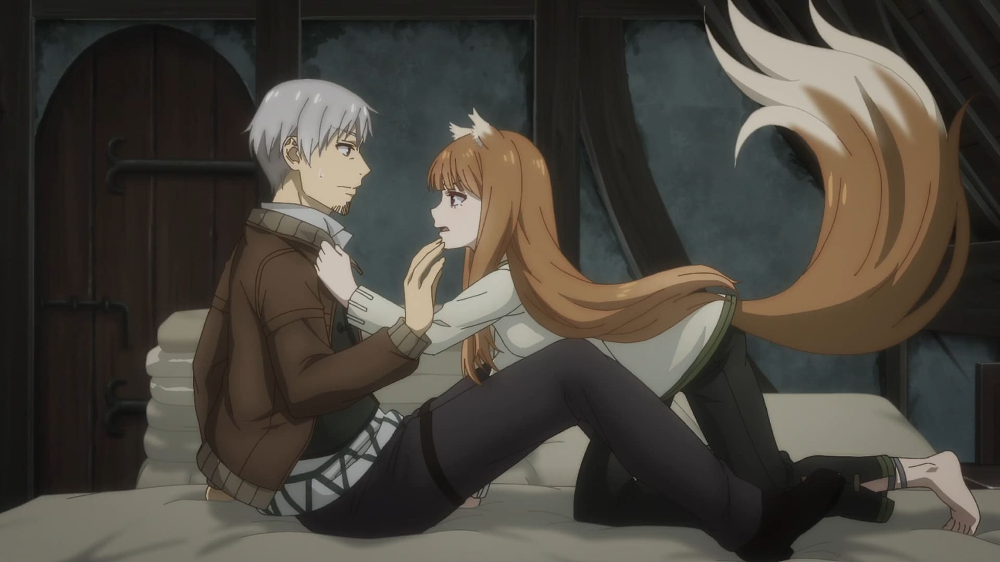

SMASH Senpai
Top 10 Supernatural Romance Anime Where Love Transcends Reality (Hidden Gems Included)
Some love stories aren’t bound by logic, distance, or even reality itself. In supernatural romance anime, love exists in worlds filled with gods, spirits, curses, parallel realities, and impossible fate.
These anime go beyond ordinary romance. They explore relationships tested by immortality, memory loss, supernatural phenomena, and forces far greater than human understanding. Love isn’t just emotional — it becomes something metaphysical.
When supernatural elements enter the picture, romance becomes deeper and more painful. Characters must choose between worlds, sacrifice normal lives, and fight against destiny itself just to stay together.
From heartfelt slow burns to intense emotional tragedies and unexpected hidden gems, these stories prove that love doesn’t disappear just because reality tries to tear it apart.
These are the Top 10 Supernatural Romance Anime where love transcends reality — blending fantasy, emotion, and unforgettable relationships that stay with you long after the final episode.
Sponsored
#1 Fruits Basket
Fruits Basket is one of the most emotionally powerful supernatural romance anime ever created. At first glance, it feels like a gentle slice-of-life story. But beneath its soft art style and warm atmosphere lies a deeply tragic tale about curses, trauma, and love that heals wounds time alone never could.
The story follows Tohru Honda, a kind-hearted girl who becomes entangled with the mysterious Sohma family — each member cursed to transform into animals of the Chinese Zodiac when embraced by the opposite sex. What begins as an odd supernatural secret slowly reveals layers of emotional suffering carried by every character.
Romance in Fruits Basket isn’t loud or dramatic. It’s quiet, patient, and deeply human. Love becomes a safe space — something that allows broken people to confront pain they’ve buried for years. The supernatural curse isn’t just a plot device; it represents emotional imprisonment.
What makes Fruits Basket unforgettable is how love transcends the curse itself. Characters learn that being seen, accepted, and loved unconditionally can break chains no magic spell ever could. Every romantic moment feels earned through emotional growth.
Fruits Basket proves that supernatural romance doesn’t need grand battles. Sometimes, the most powerful love story is about choosing kindness, again and again, until reality itself begins to change.
- Episode count: 63
- Genre: Romance, Supernatural, Drama
- Known for: Emotional depth, healing themes
- Core theme: Love as emotional liberation

play anime smash or pass here (not sponsored)
SMASH SENPAI – Smash or Pass#2 Rascal Does Not Dream of Bunny Girl Senpai
Rascal Does Not Dream of Bunny Girl Senpai disguises itself as a quirky supernatural mystery, but at its heart, it’s an intensely personal romance about loneliness, invisibility, and emotional validation. The supernatural elements exist to externalize feelings most people struggle to explain.
The story centers on Sakuta Azusagawa and Mai Sakurajima, a former child actress who begins literally disappearing from people’s perception. This phenomenon, known as Adolescence Syndrome, manifests as supernatural events tied directly to emotional pain.
The romance develops quickly, but never feels shallow. Sakuta doesn’t try to fix Mai — he listens, believes her, and stays by her side even when the world refuses to acknowledge her existence. Love here is shown as presence and understanding, not dramatic gestures.
What sets this anime apart is how romance stabilizes reality. Emotional wounds distort the world. Love grounds it. Each supernatural arc reinforces the idea that unresolved feelings can tear people apart unless someone chooses to care.
Bunny Girl Senpai proves that supernatural romance works best when it reflects real emotional struggles. Love doesn’t erase pain — but it gives people the strength to face it.
- Episode count: 26 + movies
- Genre: Romance, Supernatural, Psychological
- Known for: Emotional symbolism, sharp dialogue
- Core theme: Love as emotional recognition
Sponsored
#3 Noragami

Noragami blends supernatural action, humor, and romance into a story where love exists between gods and humans — but never without consequences. Beneath its comedic surface, the anime explores identity, worth, and what it truly means to be remembered.
Yato is a minor god desperate for recognition, struggling to survive in a world that barely acknowledges him. Hiyori Iki, a normal high school girl, becomes caught between worlds after a supernatural accident leaves her soul slipping out of her body.
Their relationship begins lighthearted, but slowly deepens as the reality of their differences sets in. Gods don’t age. Humans do. That imbalance creates tension — love becomes something fragile, constantly threatened by time and mortality.
What makes Noragami’s romance compelling is its restraint. Feelings aren’t rushed. Confessions are hesitant. The supernatural world forces both characters to confront loss, sacrifice, and impossible choices.
Noragami shows that love across worlds is never easy — but the desire to protect, remember, and stay connected can be powerful enough to challenge fate itself.
- Episode count: 25 (2 seasons)
- Genre: Action, Supernatural, Romance
- Known for: God-human romance, emotional undertones
- Core theme: Love versus impermanence
#4 Kamisama Kiss
Kamisama Kiss is one of the most beloved supernatural romance anime because it blends folklore, humor, and heartfelt emotion into a story that feels both magical and deeply human. At its core, it’s about an ordinary girl stepping into a world far bigger and stranger than herself.
Nanami Momozono starts out homeless, abandoned, and overwhelmed by life. In a twist of fate, she becomes a local shrine deity, thrust into the supernatural realm without preparation or power. Standing beside her is Tomoe, a sharp-tongued fox familiar who initially resents her existence.
Their relationship begins with hostility. Tomoe refuses to acknowledge Nanami. Trust doesn’t come easily. But as Nanami repeatedly proves her kindness, courage, and refusal to give up, emotional barriers begin to crack. Love grows not from destiny, but from shared hardship.
What makes Kamisama Kiss shine is its balance of lighthearted comedy and emotional sincerity. Beneath the playful banter lies a bittersweet reality — Nanami is human. Tomoe is immortal. Their love exists under constant threat from time and fate.
Kamisama Kiss proves that supernatural romance works best when love is earned through patience, trust, and emotional vulnerability. It’s charming, heartfelt, and quietly devastating in all the right ways.
- Episode count: 25 + OVAs
- Genre: Romance, Supernatural, Comedy
- Known for: Fox spirit romance, folklore themes
- Core theme: Love between mortal and immortal
Sponsored
#5 Call of the Night
Call of the Night offers a modern, atmospheric take on supernatural romance, focusing less on fantasy spectacle and more on emotional disconnection. It captures the quiet loneliness of being awake when the rest of the world is asleep.
Kou Yamori is a boy who can’t sleep, can’t connect, and feels detached from everyday life. Wandering the streets at night, he meets Nazuna Nanakusa — a carefree vampire who introduces him to the freedom of the nocturnal world.
Unlike traditional vampire romances, Call of the Night doesn’t rush love. Kou wants to fall in love so he can become a vampire, but emotions don’t follow logic. Nazuna herself doesn’t fully understand love, creating a relationship built on curiosity rather than certainty.
The supernatural elements reflect emotional limbo. Vampirism represents escape — from expectations, pressure, and loneliness. The night becomes a safe space where vulnerability feels possible.
Call of the Night excels because it treats romance as something confusing, awkward, and deeply personal. Love doesn’t arrive suddenly. It creeps in slowly, just like the quiet hours before dawn.
- Episode count: 25
- Genre: Romance, Supernatural, Slice of Life
- Known for: Nighttime visuals, chill atmosphere
- Core theme: Love as emotional escape
#6 The Ancient Magus’ Bride

The Ancient Magus’ Bride is a haunting, poetic supernatural romance that explores love through trauma, healing, and self-discovery. Rather than idealized affection, it presents love as something unfamiliar, fragile, and slowly learned.
Chise Hatori is a girl who has lost everything — family, purpose, and the will to live. Sold at an underground auction, she is purchased by Elias Ainsworth, a mysterious inhuman mage who claims her as both apprentice and future bride.
Their relationship begins deeply unbalanced. Elias doesn’t understand human emotion. Chise doesn’t believe she deserves love. The supernatural world they inhabit is beautiful, cruel, and indifferent — forcing both characters to confront what it means to care for another being.
What makes this romance powerful is its slow evolution. Love is not instant. It is learned through mistakes, pain, and mutual growth. Magic becomes a metaphor for emotional wounds — powerful, dangerous, and transformative.
The Ancient Magus’ Bride proves that love doesn’t save people overnight. Instead, it teaches them how to survive — and eventually, how to live.
- Episode count: 24 + specials
- Genre: Romance, Fantasy, Supernatural
- Known for: Dark fairy-tale atmosphere
- Core theme: Healing through connection
Sponsored
#7 Sankarea: Undying Love
Sankarea: Undying Love takes supernatural romance into darker, more unsettling territory, blending love with obsession, death, and the fear of losing someone forever. It’s a story that questions whether love can survive when life itself has already ended.
Chihiro Furuya is fascinated by zombies, not out of fear, but fascination. His obsession becomes reality when Rea Sanka — a sheltered girl trapped in a suffocating household — dies and is resurrected as a zombie through forbidden means.
What follows is not a traditional romance. Rea’s condition constantly threatens her body, mind, and identity. Love becomes fragile, uncertain, and painfully temporary. Chihiro must confront the consequences of wanting someone to exist beyond their natural limits.
The supernatural element here amplifies emotional horror. Rea’s undeath symbolizes emotional imprisonment — even freedom comes at a terrible cost. Romance is not idealized; it is uncomfortable, melancholic, and deeply human.
Sankarea stands out because it dares to ask whether love is selfish when it refuses to let go. It’s haunting, tragic, and unforgettable.
- Episode count: 12 + OVA
- Genre: Romance, Horror, Supernatural
- Known for: Zombie romance, dark themes
- Core theme: Love beyond death
#8 The Duke of Death and His Maid
The Duke of Death and His Maid is a supernatural romance built on longing, restraint, and emotional intimacy. Rather than action or tragedy, it focuses on quiet moments and the pain of being unable to touch the one you love.
The Duke is cursed — anything he touches dies. As a result, he lives isolated from the world, feared and avoided. The only person who refuses to abandon him is Alice, his devoted maid who openly flirts with him despite the danger.
Their relationship thrives on tension. Every smile, every tease, every near-touch carries emotional weight. The curse transforms romance into something painfully restrained, where affection must be expressed through words and presence rather than physical contact.
The supernatural curse acts as a metaphor for emotional walls — trauma, fear, and self-loathing. Alice’s unwavering love challenges the Duke’s belief that he is unworthy of happiness.
This anime proves that romance doesn’t need tragedy to be powerful. Sometimes, the inability to touch says more about love than physical closeness ever could.
- Episode count: 24+
- Genre: Romance, Fantasy, Supernatural
- Known for: Curse-based romance
- Core theme: Love without touch
#9 Dusk Maiden of Amnesia
Dusk Maiden of Amnesia blends supernatural horror with emotional romance, creating a story where love exists between the living and the dead. It balances mystery, fear, and tenderness in a surprisingly heartfelt way.
Teiichi Niiya attends a school haunted by Yuko Kanoe, the ghost of a girl who died decades ago. Unlike typical horror spirits, Yuko is playful, curious, and lonely — unaware of the full truth behind her death.
As Teiichi grows closer to Yuko, their bond deepens into romance. But the supernatural barrier between them is inescapable. Love exists under constant tension, knowing that one belongs to the present while the other is trapped in the past.
The anime uses ghostly elements to explore memory, regret, and emotional attachment. Horror scenes heighten emotional stakes, reminding viewers that unresolved feelings can linger long after death.
Dusk Maiden of Amnesia is tragic yet beautiful — a reminder that love doesn’t disappear simply because life ends.
- Episode count: 12 + OVA
- Genre: Romance, Horror, Supernatural
- Known for: Ghost love story
- Core theme: Love beyond the grave
#10 Spice and Wolf: Merchant Meets the Wise Wolf
Spice and Wolf is a refined, mature supernatural romance that replaces action with dialogue, wit, and emotional growth. It tells a slow-burning love story shaped by trust, companionship, and shared journeys.
Kraft Lawrence is a traveling merchant whose life changes when he meets Holo, a wise wolf goddess who has lived for centuries. Their partnership begins as a business arrangement, but slowly transforms into something far deeper.
Holo’s immortality contrasts with Lawrence’s fleeting humanity. Their conversations — playful, sharp, and emotionally layered — build a romance rooted in mutual respect rather than grand gestures.
The supernatural element serves as a reminder of impermanence. Holo has watched generations fade, while Lawrence fears being just another passing chapter in her long life.
Spice and Wolf proves that supernatural romance can be intelligent, subtle, and emotionally mature — a love story shaped not by destiny, but by choice.
- Episode count: 25+
- Genre: Romance, Fantasy, Supernatural
- Known for: Dialogue-driven romance
- Core theme: Love and impermanence
Play Smash or Pass on SMASH Senpai.
 PLAY SMASH OR PASS
PLAY SMASH OR PASS